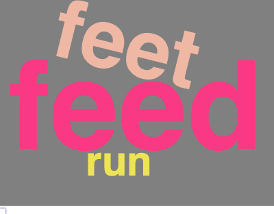

The goal of clevercloudr is to to serve as a solution to create meaningful word clouds. To create meaningful word clouds, data scientists typically takes multiple steps to clean the data, such as removing stopwords, removing punctuation and digits, making the letters lower cases, conducting stemming. This package will help data scientists clean the data easily following the common practices and also allow to create more meaningful word clouds.
Functions
There are 4 functions in this package:
CleverCleanA preprocessor to convert all the letters to lower case and remove punctuations.CleverStemmerA preprocessor to perform stemming on the textCleverStopwordsA comprehensive list of English stopwords that allow adding more customized words.CleverWordCloudAs function to generate a visually appealing word cloud with customized shape and stopwords.
Fitting into the R ecosystem
Packages that have similar functions:
- wordcloud2: a word cloud generator for data visualization
What we do differently:
Our aim is to improve on the pre-processing of strings before creating a wordcloud in order to make it more user specific and efficient.
The package wordcloud does not allow customization of stopwords, but with our package gives users the opportunity to add stopwords that cater to their analysis.
We follow the standard practices of cleaning data to make the text suitable for creating meaningful word cloud, focusing on removing duplicate words by setting all letters to lower case, removing punctuation and digits as well as applying a stemmer to further process the text.
Installation
You can install the development version of clevercloudr from GitHub with:
# install.packages("devtools")
devtools::install_github("UBC-MDS/clevercloudr")Examples
Some quick examples of CleverClean(),
CleverStemmer(), CleverStopwords() and
CleverWordCloud().
library(clevercloudr)
text <- list("grounds!!!", "feet6", "running123", "feeding", "feed", "feed$", "grounding", "feet", "happiness")
# Clean raw text data
clean_text <- CleverClean(text)
clean_text
#> [1] "grounds" "feet" "running" "feeding" "feed" "feed"
#> [7] "grounding" "feet" "happiness"
# Perform stemming on the text
stem_text <- CleverStemmer(clean_text)
stem_text
#> [1] "ground" "feet" "run" "feed" "feed" "feed" "ground" "feet"
#> [9] "happi"
# Customize the stopwords by adding stopwords specific to each project / task
new_words <- list("happi")
new_stopwords <- CleverStopwords(new_words)
# Generate the word cloud
CleverWordCloud(stem_text, new_stopwords)